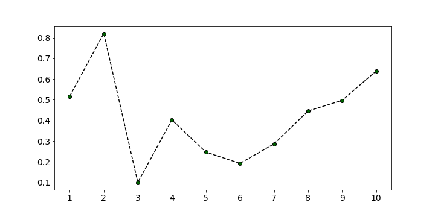

Data Science Realm

What do you see here?
You may...
- notice the maximum point
- Or, you may notice the minimum one.
- You may just take average of your whole time series
However, context matters. So, we consider subsequences.
One may use this to compare subsequences.
stumpy